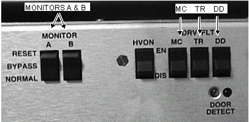

Operating Documentation
Direction 5133315-3, Rev# 14
Signa EXCITE HD 1.5T Service Methods
Module Version 1.0, Version Date 5/15/07
Operating Documentation |
| Required Persons | Preliminary Reqs | Procedure | Finalization |
|---|---|---|---|
| 1 | Not Applicable | 30 mins | Not Applicable |
Verify that the system is not in manual prescan or scanning, the scan desktop icon will display the “Idle” message.
Place the “Fault Detection” to normal system configuration as shown in Illustration 1:
Per Illustration 1 on the front panel of the SSM place the:
2 (two) power MONITOR switches (A and B) to the Normal position.
1 (one) HVON switch to the EN (enable faults) position.
3 (three) DRV FLT switches to the EN (enable faults) position.
Illustration 1: SSM FRONT PANEL SWITCHES ENABLED

Ensure that all Dynamic Disable Switch Boards are connected.
Ensure that all the Dynamic Disable Drive Bias cables (J403/J42-Body1, J401/J43-Body2, J402/J44-Direct Drive) are reconnected at the rear of the RFSC/SSM.
Ensure that all the TR Bias cables (J408, J409) are reconnected at the rear of the RFSC/SSM.
If the Multi-Nuclear Spectroscopy option is present ensure that the TR Bias cables (J407) is connected at the rear of the RFSC/SSM.
Enable the Exciter RF Output, by setting the RF Enable toggle switch (located on the front panel of the Front Plane I/O Board), to the ON position.
Put all covers back on.
Perform one body scan.
Perform One Head scan.
Delete all unneeded TLT studies in order to maximize image disk space for the customer. (TLT images are not deleted automatically in the software.)
No finalization steps.